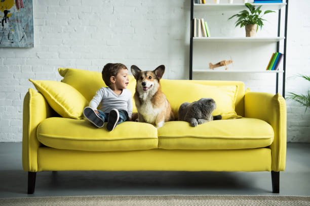
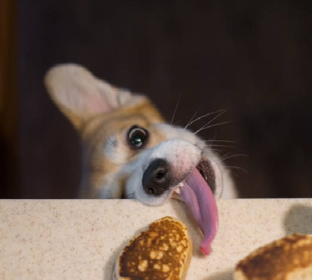

LÝ DO NÊN NUÔI CHÓ CORGI
THÔNG MINH
Corgi đang đứng ở vị trí top 15 giống chó thông minh nhất thế giới. Nhờ có trí thông minh sẵn có nên Corgi có thể ghi nhớ rất nhanh các mệnh lệnh cơ bản chỉ sau vài lần nhắc lại.
DỄ ĂN
Corgi siêu dễ tính trong khoản ăn uống. Chúng có thể ăn bất kì những gì bạn cho vì thế bạn không cần tốn quá nhiều thời gian để lên thực đơn cho chúng. Điều này hoàn toàn phù hợp với những người bận rộn.
THÂN THIỆN
Corgi rất yêu trẻ nhỏ, chúng có thể chơi với trẻ con cả ngày mà không biết chán. Với các động vật và thú nuôi khác trong nhà chúng cũng rất thân thiện và tình cảm.

QUẤN CHỦ
Corgi vốn rất giàu tình cảm, chúng rất thích dành thời gian ở bên cạnh chủ nhân của mình. Nếu bạn dành thời gian cùng Corgi hoạt động mỗi ngày thì hẳn là chúng sẽ cảm thấy hạnh phúc lắm.
ĐẶC ĐIỂM THUẦN CHỦNG CỦA CHÓ CORGI
CÁC GIỐNG CHÓ CORGI
Có hai giống chó Corgi đó là Pembroke Corgi và Cardigan Welsh Corgi. Đối với một chú chó Pembroke Corgi trưởng thành có thể cao 25-30cm, nặng 9-13kg cùng với cái đuôi đã được cắt ngắn cụt lủn. Còn Cardigan Welsh Corgi thì cao 30-35cm và nặng 12-15kg, đuôi được để tương đối dài.
ĐẶC ĐIỂM NHẬN BIẾT
Corgi có ngoại hình rất đặc biệt với 4 chân ngắn khiến cho cái thân dài của chúng nằm gần sát với mặt đất. Cái mông thì to bựa trông giống trái đào. Đôi tai hình tam giác, dựng đứng nhờ đặc điểm này nên Corgi rất thính. Kèm theo đó, đôi mắt của Corgi to, tròn long lanh lộ rõ vẻ thông minh, linh hoạt.
BỘ LÔNG CỦA CORGI
Corgi có bộ lông tương đối dài, có 2 lớp dày rất mềm mượt. Chúng thường rụng lông ở giai đoạn cuối mùa xuân, đầu mùa hạ và bắt đầu mọc lại vào mùa thu. Màu lông khá đa dạng nhưng chủ yếu là màu Vàng - trắng, TriColor...
CÁC LƯU Ý CHO NGƯỜI MỚI NUÔI CORGI
CHĂM SÓC Y TẾ: Việc tiêm phòng và tẩy giun cho bé cún là việc hết sức cần thiết. Bạn nên chọn những ngày nắng mát đưa cún đi tiêm vaccine định kì để tránh các bệnh do virus gây ra, tẩy giun thường xuyên giúp cún phát triển khỏe mạnh.
TẬP THỂ DỤC HẰNG NGÀY: Việc luyện tập thể dục thể thao thường xuyên rất quan trọng trong việc giải phóng năng lượng cũng như hạn chế tình trạng bị thừa cân đối với các bé cún. Vì vậy, mỗi ngày bạn nên dành một chút thời gian để đưa Corgi đi dạo hoặc chạy bộ cùng chúng.

CHẾ ĐỘ DINH DƯỠNG: Corgi không kén ăn. Nhưng đừng vì thế mà bạn lơ là mặc kệ Corgi ăn cái gì cũng được. Điều này sẽ gây ảnh hưởng xấu đến quá trình phát triển toàn diện của Corgi. Hãy thiết lập cho bé cún nhà mình một chế độ ăn khoa học và đầy đủ các chất dinh dưỡng cần thiết!
CHO ĂN ĐÚNG BỮA, ĐÚNG TIÊU CHUẨN: Khi Corgi dưới 6 tháng tuổi cho cún ăn 3 bữa 1 ngày, trên 6 tháng tuổi lúc đó cún đã lớn chỉ cần ăn 2 bữa 1 ngày. Cho ăn đúng giờ quy định, không để cơm thừa, không cho cún ăn thức ăn ôi thiêu vì điều này sẽ làm ảnh hưởng nặng nề đến hệ tiêu hóa của cún. Nếu nặng ơn có thể cún sẽ biếng ăn, bỏ ăn vào những lần sau.
CHĂM SÓC BỘ LÔNG CHO CORGI: Corgi có bộ lông đương đối dài và dày vì thế bạn cần phải đầu tư thời gian vào việc chăm sóc lông cho chúng. Thường xuyên đi cắt tỉa lông kết hợp với việc chải lông để loại bỏ lông chết là điều bạn nên làm. Bên cạnh đó, việc tắm rửa và sấy khô lông cho cún cũng rất quan trọng vì lông là môi trường thuận lợi cho nhiều vi khuẩn cư trú cũng như sinh sôi, phát triển.
HUẤN LUYỆN: Bạn nên huấn luyện Corgi từ lúc chúng mới được 2 tháng tuổi. Bắt đầu bằng những bài tập, câu lệnh đơn giản ví dụ như: Đứng lên, ngồi xuống hay đi vệ sinh đúng chỗ,...
MÔI TRƯỜNG SỐNG: Cún phải có chuồng hoặc ổ riêng, bạn tuyệt đối không được cho cún nằm ngủ ở đất. Vị trí đặt ổ phải đảm bảo các yếu tố nhiệt độ mát mẻ phù hợp, có nhiều ánh sáng thông thoáng, tránh nơi ẩm thấp tối tăm như gầm cầu thang và nhà vệ sinh.